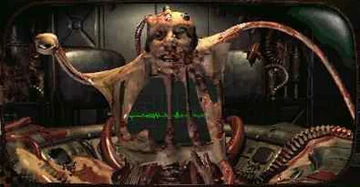

Leader of the Super Mutants | Visionary | Mutant Overlord
The Master, originally known as Richard Moreau, is the visionary leader of the super mutants, seeking to unify the wasteland under a single, evolved race.
1980 - Present
Created and led an army of super mutants with the goal of unifying the wasteland.
1970 - Present
Established a religious front to further the goals of mutant unification and peace.
Email: master@unity.com